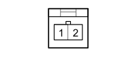

Q011B AIR BAG IN DASHBOARD (PASSENGER SIDE) (FACIA)
- Path
- Electrical equipment > 3 CONNECTORS > Q SAFETY DEVICES > Q011 AIR BAG IN DASHBOARD (PASSENGER SIDE) > Q011B AIR BAG IN DASHBOARD (PASSENGER SIDE) (FACIA)
- Kind
- connector pinout (pin -> wire colour -> other end)
- Applies to
- engines: 1.4 8v, 1.6 16v, 1.3 JTD 16V, 1.9 JTD 8V; production: da 12/03; only with equipment: MY 2005
- Interactive page
- https://sloeber94.github.io/elrnDB-fDbl/en/#/223005454
Applies to: engines: 1.4 8v, 1.6 16v, 1.3 JTD 16V, 1.9 JTD 8V; production: da 12/03; only with equipment: MY 2005

Wiring | Colour |
|---|---|
BIANCO (white) |
Pin | Cable | Destination | |||
|---|---|---|---|---|---|
Sec.. | Colour | Node | Connect. | Pin | |
1 | 0,5 | N (black) | 5 | ||